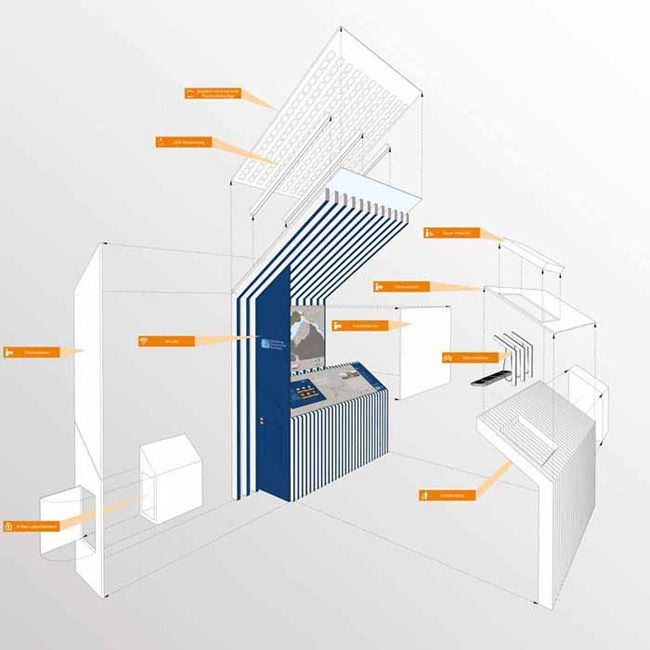

Welcome to Architektur
Start- DETAIL - Magazin für Architektur + Baudetail
2020.12.13 11:09
You are using an outdated browser. Please upgrade your browser to improve your experience.
Menü Jobs Shop News Suche x x Start Themen Research Veranstaltungen Blog Produkte Specials structure Über uns Newsletter Heftarchiv Mediadaten Impressum Datenschutz Englische VersionLeuchtturm für die Energiewende: Institutsgebäude in Offenburg
Das Regionale Innovationszentrum Energietechnik von Birk Heilmeyer und Frenzel setzt auch baulich höchste Effizienzstandards.
DETAIL 12/2020Bauen mit Beton
Aktuelles Heft Heftarchiv Zum Shop INTERIORS I2/2020DETAIL Interiors 2/2020
Aktuelles Heft Heftarchiv Zum ShopNeueste Artikel
Es kommt ein Schiff geladen: Schwimmendes Gotteshaus in London
Für die Pfarrgemeinde St Columba im Osten Londons hat Denizen Works einen langen, schmalen Kahn entworfen, der als mobiler Kirchenraum dient.
Urbane Catwalks: Im Gespräch mit Kinzo
Interview mit Kinzo über das neue Headquarter für Zalando in Berlin
Kurze Werbepause
Themen
Neueste Artikel GebäudeUnsere Favoriten: Drei Zaha Hadid-Türme im städtischen Raum
GebäudeSensible Stadtreparatur: Suhrkamp-Verlagsgebäude von Bundschuh Architekten
GebäudeAxel Springer-Campus von OMA: Trendsetter oder Anachronismus?
GebäudeSinnlicher Beton: Flagshipstore von David Adjaye
GebäudeÜber den Dächern Wiens: Pavillon von O&O Baukunst
GebäudeSchlank und sicher auch auf dem Dach
GebäudeHybrides Lüftungskonzept für gesunde Raumluft in Schulen und Büroräumen
GebäudeFavoriten unserer Leser: Die beliebtesten DETAIL-online Artikel im November
GebäudeFunkelnde Chronometer: Ausstellungsdesign von Atelier Brückner
GebäudeWohnen mitten im Schnee: Skigard Hytte von Mork-Ulnes Architects
GebäudeIn der Höhle: Archeopark in Pavlov
Jetzt abonnieren
News aus Architektur & Design
» Zum NewsletterResearch
Bauteil & MaterialDünnglas für die Fassadengestaltung
Produktion & ProzesseKomplexe Bauvorhaben besser organisieren und bewältigen
Energie & RessourcenRecyclingprodukte aus feinem Bauschutt
Bauteil & MaterialSpannstahl mit Formgedächtnis
Bauteil & MaterialResiliente Brücken aus lebenden Wurzeln
Gesellschaft & UrbanesGesundheit in der Stadt
Veranstaltungen
FachveranstaltungenKostenloses Webinar: Digitale Tools für nachhaltigeres Bauen
FachveranstaltungenTuesday Night Live: 20 Fragen zur Architektur
VeranstaltungenWeihnachtsquiz 2020
FachveranstaltungenDigitale Weiterbildung: VFF ARCHITEKTENTAG: Neue Perspektiven für die Gebäudehülle – zukunftsweisend, innovativ und dynamisch.
FachveranstaltungenKostenloses Webinar - Die neuesten Trends in der Architekturbranche
FachveranstaltungenDigital Leaders in Architecture
Blog
ArchitekturKirche in Kinderhand: Grundschule von Public Atelier und Fuuze
ArchitekturEine Galerie für die Gegenwart von Office Kersten Geers David Van Severen
ArchitekturRaumkontinuum in Sichtbeton: Wohnhaus in Graubünden
ArchitekturDorfplatz in Beverly Hills: Das neue Gardenhouse von MAD Architects
ArchitekturTechnik mit Charme: Feuerwache in Saragossa von Idom
ArchitekturSchwarzer Industrie-Chic: Temporärer Bau von AFF Architekten
Produkte
ErschließungVideo-Zutrittsüberwachung
ErschließungBodenebene Türschwelle
AußenanlagenÖkologischer Pflasterstein
InnenausbauNaturholztreppen nach Maß
InnenausbauMinimalistische Schiebetüren für ein Büro
AußenanlagenSonnenschutz und Lamellendach
ARCHITEKTUR & DESIGN
Detail Newsletter
Wir informieren Sie regelmäßig über internationale Projekte, Neuigkeiten zu Architektur - und Designthemen, Research und aktuellen Veranstaltungen in unserem Newsletter.
